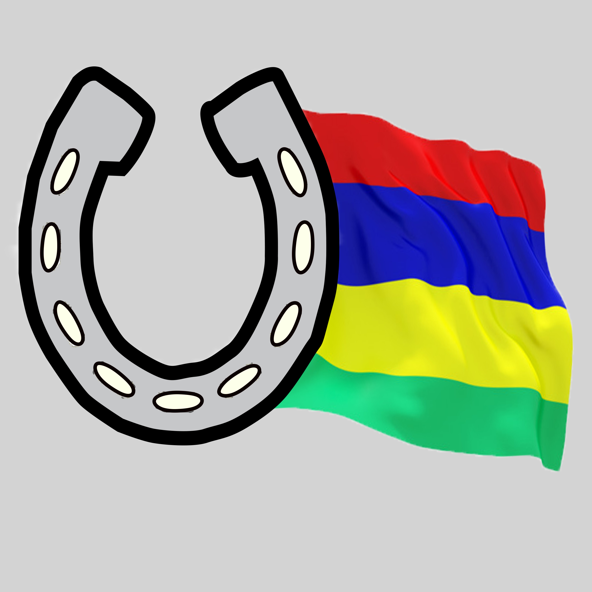

HORSE RIDING DELIGHTS
About Us
The Horse Riding Delights is a small leisure business, whether you already know how to ride or are just getting started. You may tour this magnificent property on horseback, accompanied by a trained instructor, at Mont Choisy, near Grand Bay in the north. The walks last approximately an hour and a half, and along the way you’ll see deer, hares, gigantic tortoises, and farm animals.
During a delightful visit, you will learn about the traditional house and its beautiful farm and garden, the centenarian tortoises, and all of the farm animals. A reception is held at the traditional house at 8 a.m. The refreshments include tea, coffee, juice, croissants, chocolate croissants, and biscuits on order.
Our best and most ask activities are:
SUNSET HORSE RIDING-
From 5 p.m to 7 p.m, you can admire the sunset at Mont Choisy Beach, accompanied by a meal which you must specified while reserving your activity, so that we can prepare all your stuffs so that you are hand-free with nthing to bring.
BEACH HORSE RIDING-
For 1 hour, we offer a horseback ride to the beach for lovers or families. This offer is valid every day from 8 a.m. to 5 p.m. You can either have a ride on the Mont Choisy beach, or you can also have a ride in our farm and garden. If you are not professional, you will have a guide for all help needed. If you have chikdren, there is either the children package or a pony for the ride.
BREAKFAST PACKAGE-
In your breakfast package, you will be entitled to your breakfast or picnic at the beach or in our romantic garden with the animals in the farm, in addition to your 1 hour horseback ride accompanied by a guide.
CHILDREN PACKAGE-
For children, we offer a pony ride, feed the pony, the hens and other animals in the farm depending on their disponibility and play with the activities available in our garden, like farm visiting on hay cart and fruits picking accompanied by a guide.